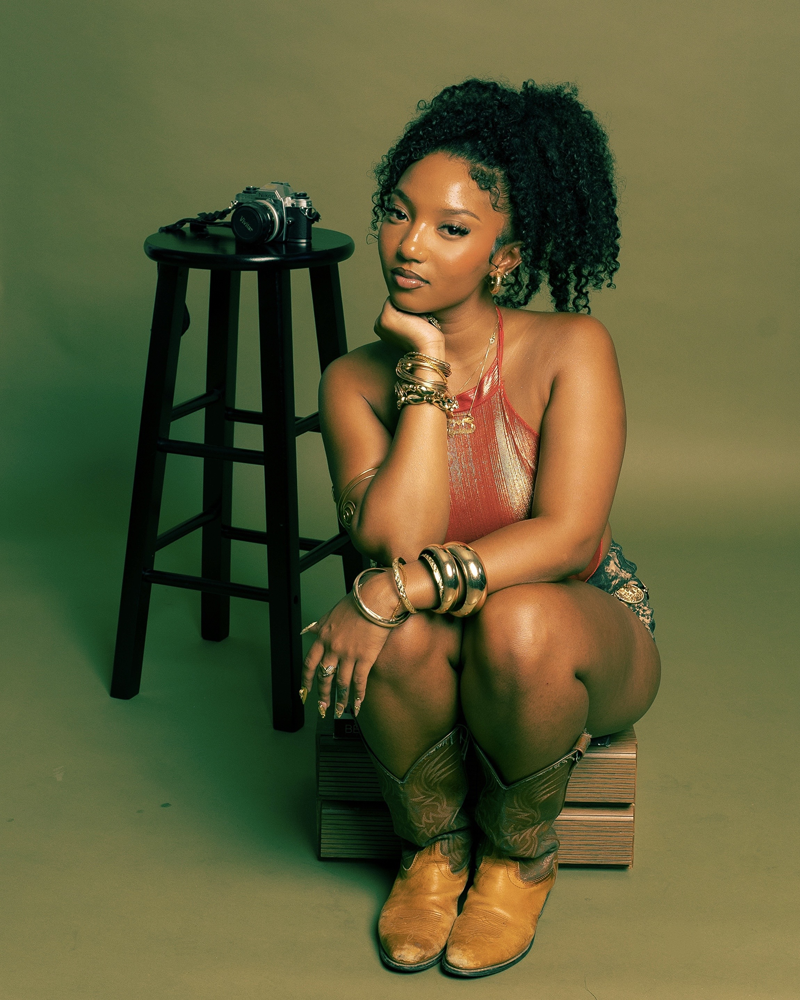
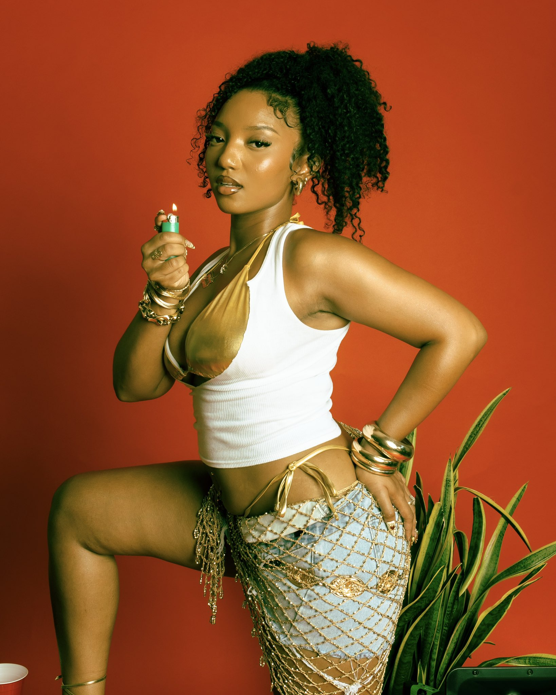

Welcome to
my lens.
I am Tyann Reneau, the photographer behind tyto.okit — a handle inspired by the dual perspectives and multifaceted ways I view the world through my 35mm camera. LA-born, Houston-based, and anchored by one belief: for the kids in the shadows who deserve to shine with the sun.

Studio — Frame 01
A film photographer
& educator.
My photography is dedicated to capturing the raw, unfiltered essence of Queer, Trans, Black, Indigenous, and People of Color (QTBIPOC), as well as the quiet, overlooked moments in nature and human connection. The intentionality required by film photography — the patience, the vintage gear, and the unpredictability of every frame — has taught me grace, resilience, and a deeper connection to my community and ancestors.
Whether I am behind the camera or helping others discover their own creative spark, my goal is simply to share the beauty that surrounds us and create a space where we can all be seen.
I'm deeply grateful in advance for those I have yet to co-create with. Let's make something timeless.
Film Photography
Shot entirely on 35mm — patient, intentional, and unpredictable in the best way. Every frame is earned, not scrolled past.
Community & Culture
Centering QTBIPOC stories, nature, and human connection — the quiet, overlooked moments that deserve to be witnessed.
Education
Helping others discover their own creative spark — because the goal was never to be the only one holding the camera.
Press & Features
For the kids in the shadows who deserve to shine with the sun.